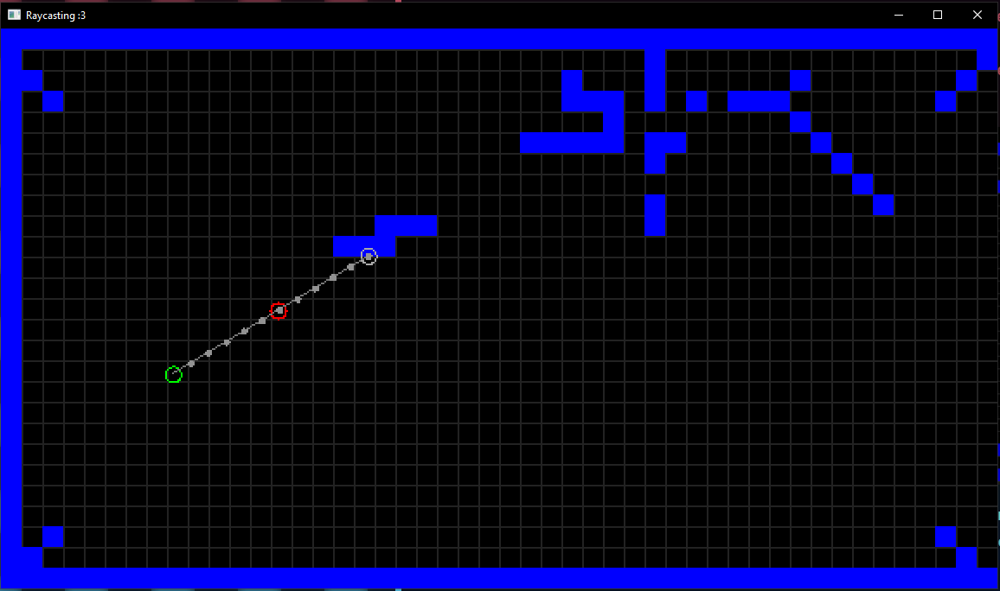
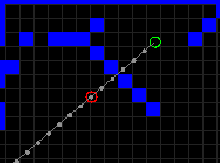
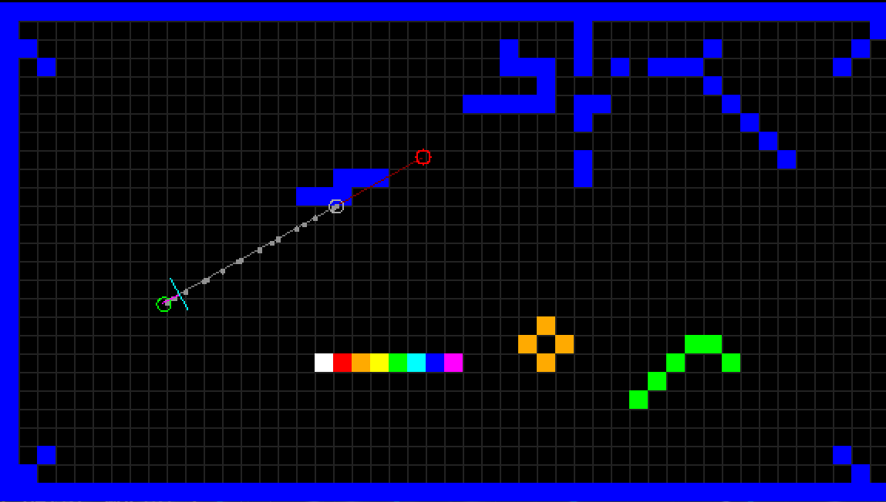
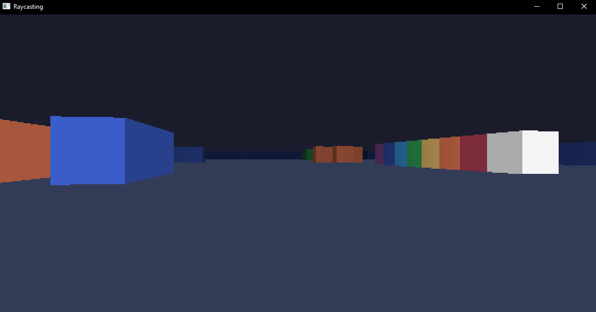

Raycaster
After a pretty large creative drought, I decided to start work on a little raycaster. It's not finished yet (and may never be..)
Here's what I've got so far!

Programming...
The beginning...
I wanted to make this in the (in my (correct) opinion) best programming language, Rust.
To start off with, I'd have to make a window. I'm not gonna make this in the console, am I? Who do you take me for??
So, I had to pick a graphics library. I rifled through the many Rust graphics libraries and settled on Pixels, which should be good as I'm making a software renderer and don't need things like sprites and fancy abstractions. Pixels basically gives you an array of colour values to do whatever you want with, which is perfect.
So, with pixels installed, I made my first window, nothing to write home about but, it works!

Drawing a map
Before I can make it 3D and all that jazz, I should first make a 2d top-down view of the world. This made debugging and figuring out what to do much easier.
To draw shapes I used a nice crate called pixels_primitives, however the rect function used floats and I didn't want to have to convert between my PURE integer values EACH FRAME, so I made my own little rect function, doesn't have bounds checking, but I trust myself not to mess up.

Casting a ray
I made a simple 2D map with a player, and rendered it all with those lovely functions from before. The player (a green circle) points towards the mouse (a red circle) and casts a ray (it's hit point being shown as a grey circle). The smaller grey circles represent each step the ray takes forward.

Currently, this is a pretty naive approach. The ray moves a fixed amount forward each time, which works, but is bad!! It can easily miss corners and other parts of the map like so...

What we NEED is something that takes the largest amount of steps possible, without missing any squares, some kind of.. Algorithm, but where to find such a thing on the internet?
All kidding aside, those three pages linked above, among many others, were a massive help in understanding the maths behind this. They use an algorithm called DDA, which steps through a grid optimally without missing any cells. I'm not even going to try to explain it myself as any attempt will be a futile bastardisation of the formers.
With the DDA algorithm implemented, we now have this! No misses! (I also drew the players direction vector and camera plane, as well as added coloured cells) 
just LOOK at the way it handles corners! Beautiful!

THREE DIMENSIONS
(Not really, just some maths)
Ok.. we have a reliable raycasting function, plus some general boilerplate, now to make it look 3D!
At first things were a bit goofy...

But I ended up with this! It looks great!


Ok.. I'm lying, that doesn't look good. It looks pretty awful! Aside from the poor choice of colours (I just wrote down hex codes without using a colour picker haha), it's all bulgy!!
What to do?? Well, this is because we're getting the distance from the player to the wall, as opposed to the camera plane to the wall.
I drew a diagram and wrote an explanation, the diagram is nice so I'll keep it, but my explanation was awful, click here for a GOOD one.

To get the correct distance, some trigonometry tells us that we should divide the distorted distance by the cosine of the angle. Thank you, permadi.com!
After applying this fix, as well as making the colours look way nicer, we have this! Beautiful! (This is using a modified version of the Sweetie 16 colour palette) 
And here it is in motion, with lovely head bobbing smooth movement! (The gif is a little bit choppy)
Silly bit before I delve into textures
I remembered a video by Codeparade about raymarching, and how you can make a world infinite by simply taking the modulus of the position of the ray. And then I remembered I have free will! I am human!! I could do the same!!!! The world is my oyster!!!!!
So yeah, for a brief period worlds looped indefinitely which was quite silly I think :3

A brief bit of text before I add textures
Ok, I'm gonna level with you, I think the plain version looks way nicer. It's so clean and stylised! However, textures are a super useful thing, and I might as well at least attempt to add them.
You might notice that at the START of the page, I'm showing off the untextured version. This is because I think it looks nicer, and the code for textures is still a little bit choppy (tried to revamp headbob and some other polish, now they don't work haha).
Textures
I made this weird debug texture (hadn't implemented texture loading yet so it was literally just an array of rgba values lol) and did some funny code and it works!

Wait.. no it doesn't

This was a simple fix however (I'm lying)
Here's it fixed, with a much nicer texture that I drew :3 (plus a NEW minimap!)

Mirrors
I also tried adding mirrors, however this was in the span of about an hour, and I was tired and hungry. It's a wonder it even sort of works!
It also has weird graphics from when I was trying to debug things haha.

Honestly the mirror code was so awful, I'm gonna revert to the last commit and not even attempt to salvage it.
Next steps
I'll be adding more to this soon, although this page might not update for a while.
Currently the github is private because I'm still working on it, and the code is AWFUL, however if you really want to see the code do shoot me a message on discord or reddit and I'll make it public, just for you!!
Addendum
I know the explanations and examples are a little bit crude, I mention raycasting-related phrases and buzzwords like you automatically know what I'm talking about.
This page isn't meant as a tutorial to anyone, more to document something I've been working on and make sure it doesn't just rot on my hard drive forever!
Please do check out the many links scattered around this page for intuitive and all round better explanations. <3
January 2024